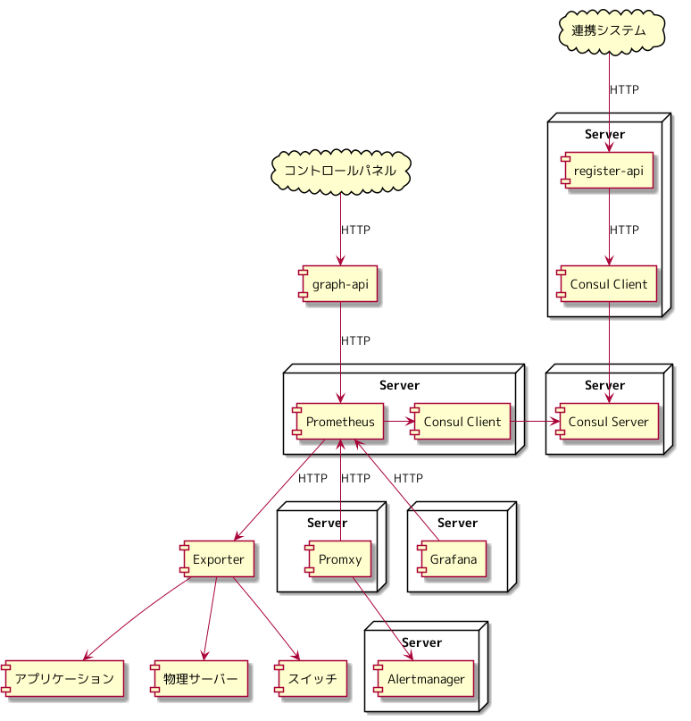

さくらインターネット Advent Calendar 2021 11日目の記事になります。
Prometheus 以前のモニタリングの仕組みを考察してみる では、 Nagios, Cacti を例に Prometheus 以前のモニタリングの仕組みはどのようになっているかを考察し、 Nagios, Cacti で「さくらの専用サーバ PHY」のモニタリングを実装するとどうなりそうであるかを考え、 「けっこうアプリケーションを作ら作らなければならないな」ということが見えてきました。
今回は、 Prometheus を使うと、どのようなモニタリングの基盤を構成可能であるかを考察し、 Prometheus を使うと何がうれしいのかを考えてみます。
用語
Prometheus の話をするにあたり、知っておかなければ話を進められない用語について説明します。
メトリクス
Prometheus は、下記のような形式にて対象の情報を取得し、メトリクスを呼ばれています。
メモリ利用量のメトリクスの例
# HELP node_memory_MemAvailable_bytes Memory information field MemAvailable_bytes.
# TYPE node_memory_MemAvailable_bytes gauge
node_memory_MemAvailable_bytes 6.2036496384e+10
Exporter
エクスポーターと呼びます。 Prometheus にメトリクスを保存するためには、 Prometheus が保存できる形式のメトリクスを HTTP として公開する必要があります。 この機能を持ったアプリケーションを Exporter と呼んでいます。 Prometheus にメトリクスを保存するためには Exporter が必須となります。
Prometheus でのモニタリング
Prometheus 以前のモニタリングの仕組みを考察してみる では、 Nagios, Cacti にて「さくらの専用サーバ PHY」のモニタリングを考察しました。 今回は、 Prometheus を使った場合の「さくらの専用サーバ PHY」のモニタリングを考察します。
アーキテクチャ
下記のアーキテクチャをベースに「さくらの専用サーバ PHY」を Prometheus にてモニタリングした場合について考えてみます。

ユーザーが利用している機器のモニタリング
Prometheus は、 コンテナオーケストレーションにて必要になってくるもの にて説明した Consul と連携できるようになっています。 Consul は Nomad と組み合わせるだけのものではなく、「サービス」を登録する仕組みになります。 Consul に「物理サーバー」「スイッチ」といった「サービス」を登録し、 Prometheus のモニタリング対象として呼び出すことができるようになっています。
https://prometheus.io/docs/prometheus/latest/configuration/configuration/#consul_sd_config
下記は、「物理サーバー」を phy-server 、 「スイッチ」を phy-switch という「サービス」として Consul に登録した場合に、 Prometheus でモニタリングの対象とする設定の例になります。
# Prometheus のコンフィグ
scrape_configs:
- job_name: phy-server
consul_sd_configs:
- services:
- phy-server
- job_name: phy-switch
consul_sd_configs:
- services:
- phy-swtich
IP アドレス、ポート番号などは出てこず、「サービス」という名前だけが、 Prometheus でモニタリングするために必要な情報となります。
Nagios, Cacti では、それぞれに対象を登録していましたが、 Prometheus と Consul を組み合わせると、 Consul に「サービス」を登録・削除するという操作によって、 Prometheus でのモニタリング対象を管理できます。
対象の登録・削除のエンドポイントを register-api というアプリケーションにて公開し、 Consul の HTTP API にリクエストすることで、サービスを登録する仕組みを用意すれば、 Prometheus にモニタリング対象を追加、削除できます。
Consul にメンテナンスを管理するためのフラグ情報を登録しておき、 Prometheus には、そのフラグの値によってモニタリングの対象から除外する設定を入れておけば、 メンテナンス中の対象を Prometheus のモニタリング対象から除外するといった処理も可能です。
サービス提供のために動いているアプリケーションのモニタリング
Nagios, Cacti では、 Consul を参照し、 Nagios, Cacti に登録するアプリケーションを作るということを考えました。 Promtheus は、 Consul との連携を標準で用意しており、 Consul に登録したサービス名を Prometheus に設定するだけで、 Prometheus のモニタリングの対象とすることが可能です。 登録するアプリケーションを作るということは不要です。
ユーザーへのトラフィックグラフの提供
Prometheus は HTTP API を提供しています。 Prometheus に保存しているトラフィックのメトリクスをコントロールパネルに表示するための形式に変換する graph-api を作れば、コントロールパネルに表示するデータを返すことができます。
https://prometheus.io/docs/prometheus/latest/querying/api/#range-queries
Prometheus を使うと何がうれしいのか
Prometheus 以前のモニタリングの仕組みを考察してみる では、 Nagios, Cacti を例に、4つの観点で考察しました。 Prometheus でのモニタリングでは、どうであるかについて考察してみます。
対象の追加・削除
Nagios, Cacti では、それぞれに対象を追加・削除していましたが、 Prometheus では、 Consul との組み合わせにより、対象の追加・削除を一元管理できるようになっています。 Prometheus が複数台になったとしても、 Consul を参照すれば、モニタリングの対象を管理できます。
ストレージ
Nagios, Cacti では、取得したデータは、それぞれのストレージに保存されており、 HTTP API を介してストレージのデータにアクセスする手段はありませんでした。
Prometheus では、 Prometheus というメトリクスが保存されたストレージを起点に、 Prometheus の HTTP API を介して、 アラート発砲は、 Promxy ( Promxy を使ったアーキテクチャ を参照 )、 時系列データなどのグラフ表示は、 Grafana を使う構成をとることができます。
https://prometheus.io/docs/prometheus/latest/querying/api/
インタフェース
Prometheus にメトリクスを保存するためには、 Exporter が必須となります。 メトリクスの形式、メトリクスを公開するためのプロトコルが統一されています。
Nagios ではリターンコードにより、 Nagios と Nagios プラグインがネットワークを越えられない制約を受けていましたが、 Prometheus では、 HTTP を使っていることにより、ネットワークを越えられます。
リターンコードにより、 Nagios では、メトリクスの取得と評価を Nagios プラグインで行う構成となりますが、 Prometheus では、 HTTP API が提供されているため、メトリクスを評価し、 アラートを発砲する処理を別コンポーネント( Promxy )として切り出すことができるようになりました。
Prometheus では、 PromQL という Query Language を使い、保存されているメトリクスにアクセスします。 Nagios, Cacti では、それぞれのインタフェースにてアラート発砲、データ集計などを実装する必要がありましたが、 Prometheus では、 アラート発砲に利用する Promxy も、 Grafana を使った時系列データなどのグラフ表示でも、 PromQL を使うようになっており、インタフェースが統一されています。
スケールアウト
Nagios では、 Nagios と Nagios プラグインがセットになったサーバーを1台追加するという形をとることになります。 Prometheus を利用したモニタリングの仕組みでは、 役割ごとにコンポーネントが分かれているため、コンポーネントごとにスケールアウトが可能になっています。 例えば、 Exporter がボトルネックになった場合は、 Exporter をスケールアウトさせるという手段が取れます。
Prometheus 以前のモニタリングの仕組みがどうなっており、 Prometheus を使うと何がうれしいのかをイメージしてもらえたでしょうか。 Exporter についての踏み込んだ説明はしていないため、 次回は、どのような役割を持った Exporter があるのかを分類しながら説明していきます。